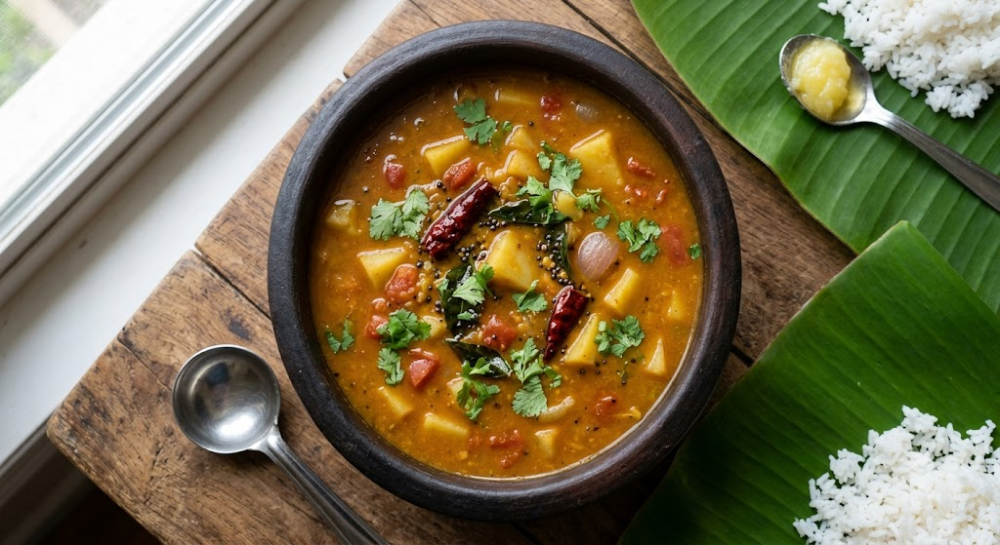

Potato Sambar
⭐⭐⭐⭐⭐ 4.9 Rating | ⏱ 30 Minutes | 🍽 2 Servings
Category
Lunch/Dinner
Difficulty
Medium
Calories
195 kcal
Cooking Style
Simmering
📋 Ingredients
- 1/2 cup Toor dal (Pigeon peas)
- 1/2 tsp Turmeric powder
- 1/2 tsp Ghee
- 2 medium Potatoes (peeled and diced into medium cubes)
- 1 medium Tomato (chopped)
- 6-8 Shallots (sambar onions)
- Salt to taste
- 6-8 Shallots (sambar onions)
- 2 tbsp Sambar powder
- 1 tbsp Oil or Ghee
- 1 tsp Mustard seeds
- 1/4 tsp Fenugreek seeds (methi)
- 2 Dry red chillies
- 1 sprig Curry leaves
- Pinch of Hing (asafoetida)
- 2 tbsp Fresh coriander leaves (chopped)
🍳 Required Utensils
- Pressure cooker
- deep pot/kadai
- small tadka pan
- potato whisk/masher
- ladle
📖 Introduction
Potato Sambar (Urulai Kizhangu Sambar) is a hearty South Indian lentil stew where tender, starch-rich potato cubes are simmered in a tangy tamarind broth, combined with mashed toor dal, and finished with a sizzling spice tempering.
🔬 Principle
The core technique relies on boiling potato cubes directly in acidic tamarind water so they absorb tanginess while remaining intact. As the potatoes cook, they release natural starches into the toor dal base, resulting in a naturally thicker, richer stew without needing extra thickening agents.
👨🍳 Procedure
- Rinse toor dal until water runs clear.
- Pressure cook with 1.5 cups water, turmeric, and 1/2 tsp ghee for 4–5 whistles until soft.
- Whisk or mash thoroughly into a smooth paste.
- In a deep pot, combine diced potatoes, shallots, tomatoes, tamarind extract, sambar powder, salt, and 2 cups water.
- Cover and cook over medium heat for 10–12 minutes until the potatoes are fork-tender.
- Pour the whisked toor dal into the potato pot.
- Stir gently so the potatoes do not mash entirely.
- Simmer on low heat for 5 minutes to let the flavors meld together.
- 4.4. Perform Tempering:Blooms fat-soluble essential oils.Heat oil or ghee in a small pan. Pop mustard seeds, then add fenugreek seeds, dry red chillies, curry leaves, and hing.
- Sauté for 10 seconds, pour immediately into the sambar, cover with a lid for 2 minutes, and top with fresh coriander.
⚠ Precautions
- High glycemic index dish due to potatoes
- Individuals managing diabetes should monitor portion sizes or pair with extra protein/vegetables.
💡 Chef Tips
- Cut potatoes into equal 3/4-inch cubes so they cook evenly without smaller pieces dissolving into the liquid.
- Lightly press 2–3 potato cubes against the side of the pot with your ladle during step 3 to give your sambar an extra velvety body.
- Add fenugreek seeds right after mustard seeds finish popping—burning fenugreek gives the sambar a bitter aftertaste.
🥗 Nutrition Facts
| Nutrient | Amount |
|---|---|
| Calories | 195 kcal |
| Protein | 7 g |
| Carbohydrates | 34 g |
| Fat | 4 g |
| Fiber | 5 g |
🍽 Serving Suggestions
- Serve hot over steamed rice drizzled with ghee, accompanied by papadums or a dry spicy vegetable fry (like Bhindi Fry or Arbi Fry).
- Serves as a thick, rich gravy for breakfast staples like Idlis, Dosas, and Medu Vadas.
🌿 Health Benefits
- Potatoes provide easily digestible carbohydrates and potassium, while toor dal adds plant protein and dietary fiber.
✅ Result
A comforting, thick, and velvety lentil stew packed with soft, flavor-infused potato cubes, featuring a balanced profile of sour, spicy, and earthy notes.
🎥 Watch Recipe Video
Learn the complete recipe by watching the step-by-step video.
▶ Watch on YouTube